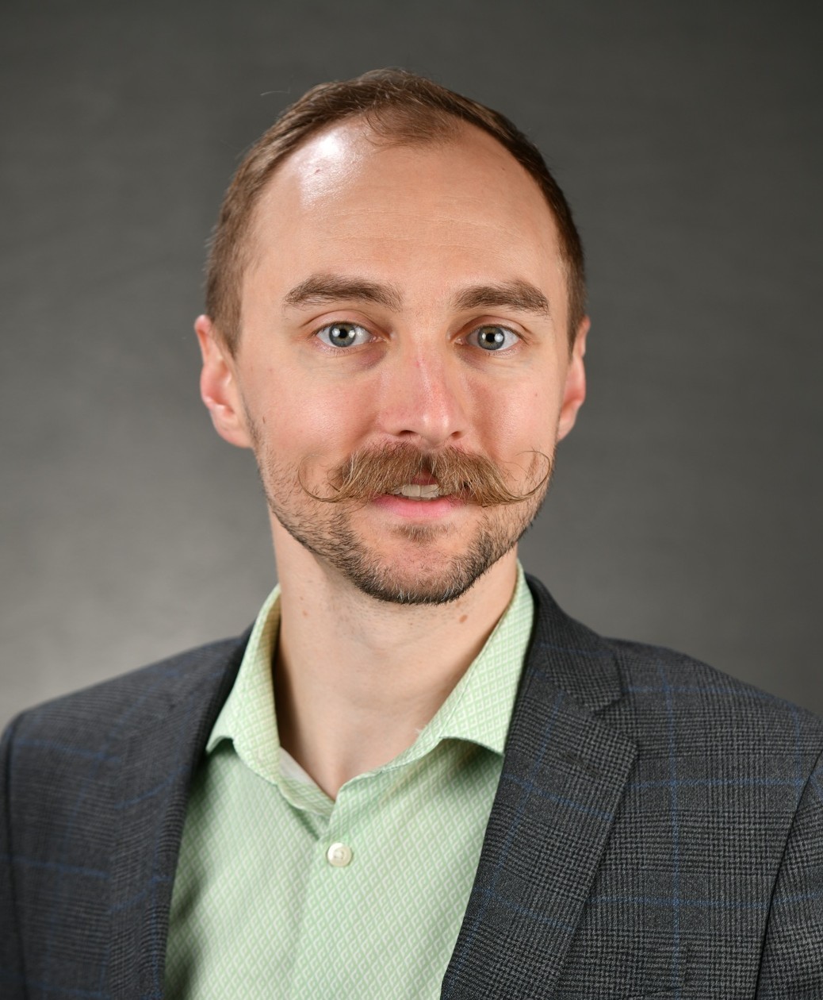
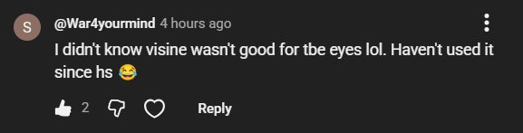

Clinical Optometrist, Speaker, Content Creator

Welcome! Come see what I've been working on.
If it's funny, people will listen. Matlock OD is a way to bridge the gap between providers and patients. It also allows the opportunity to impart (or reinforce) some important words of wisdom, such as what to do with that bottle of visine, and seriously- don't sleep in those contact lenses.
There are many voices competing for our patients attention, and mis-information abounds- ranging from frivolous to downright dangerous. It's not enough anymore for us to meet our patients in the exam room. We must also have a presence on their screens as well.
Content from clinicians is highly informative, and serves as a great reference of material for those patients who are interested. It does not however have the same "spreadable" potential. Comedic content from clinicians tends to be skewed more towards other providers, and while it may be interesting to some patients, it also does not have the same potential to spread among the public. Matlock OD is a project that is highly relatable to both clinicians and patients, with an absurd humor that appeals to anyone. The messages it delivers are simple (visine=bad, sleeping in contact lenses=bad), but this combination of humor and a simple moral makes the message endure in the memories of the viewers.
Just look at this comment that was left on this visine video!

Just like our patients, doctors also respond better to humor and engaging delivery of information. My lectures are attention grabbing and dynamic, because more can be learned when attention is held! Here are some lectures I've given lately:
For many dealing with sub-optimal EMRs the answer may not be more advanced tech (AI scribing tools), but rather less advanced tech- simple macros. Macros' potential to improve clinical efficiency has not been fully tapped, especially by EMRs. I am striving to develop a maximally useful script using an open source programming software called AutoHotKey, which I will make fully available to any and all who wish to utilize it. While under development still, it can be viewed and downloaded here.
Read more about this project in my blog section.